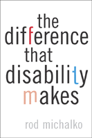

<body bgcolor="#FFFFFF" text="#000000" link="#0000FF" vlink="#CC0000" alink="#CC0000"><center><hr width="350" size="1" align="center" noshade>Excluding disabled people is a political act&#151so is choosing disability<hr width="350" size="1" align="center" noshade><p><a href="https://cdcshoppingcart.uchicago.edu/Cart/ChicagoBook.aspx?ISBN=9781566399333&&PRESS=temple" target="_top">Buy this book!</a> | <a href="https://cdcshoppingcart.uchicago.edu/Cart/Cart.aspx?PRESS=temple" target="_top">View Cart</a> | <a href="https://cdcshoppingcart.uchicago.edu/Cart/Cart.aspx?PRESS=temple" target="_top">Check Out</a></p><p></p></center><!--none//--><h1>The Difference That Disability Makes</h1>
<h3>Rod Michalko</h3>
<P>cloth 1-56639-933-5 $59.50, Mar 02, <FONT COLOR=#990033>Out of Stock Unavailable</FONT>
<br>paper 1-56639-934-3 $29.95, Mar 02, <FONT COLOR=#990033>Available</FONT>
<BR> 208 pp
6x9
</P><BLOCKQUOTE><I>"Rod Michalko's superb book, </I>The Difference That Disability Makes<I>, is a nuanced and compelling contribution to the growing field of disability studies in the humanities. By using personal narrative and the lived experience of disabled people to mount critical analysis, Michalko uncovers the social construction of disability and challenges the received cultural assumptions and stereotypes that limit disabled people. But Michalko's unique and revealing contribution to disability studies is his incisive interrogation of the concept of suffering&#151perhaps the most pervasive characteristic attributed to people with disabilities. Michalko demonstrates brilliantly that we people with disabilities do not suffer our impairments so much as 'we suffer our society.'"</I>
<br>&#151<b>Rosemarie Garland Thompson</b>, author of <I>Extraordinary Bodies: Figuring Physical Disability in American Literature and Culture</I><I></I></BLOCKQUOTE>
<p>Rod Michalko launches into this book asking why disabled people are still feared, still regarded as useless or unfit to live, not yet welcome in society? Michalko challenges us to come to grips with the social meanings attached to disability and the body that is not "normal."
<p>Michalko's analysis draws from his own understanding of blindness and narratives by other disabled people. Connecting lived experience with social theory, he shows the consistent exclusion of disabled people from the common understandings of humanity and what constitutes the good life. He offers new insight into what suffering a disability means to individuals as well as to the polity as a whole. He shows how disability can teach society about itself, about its determination of what is normal and who belongs. Guiding us to a new understanding of how disability, difference, and suffering are related, this book enables us to choose disability as a social identity and a collective political issue. The difference that disability makes can be valuable and worthwhile, but only if we choose to make it so.
<BR>&nbsp;<h2>Excerpt</h2><P>Excerpt available at <a href="http://www.temple.edu/tempress">www.temple.edu/tempress</a></p>
<BR>&nbsp;<h2>Reviews</h2>
<p><I>"This is a savvy and provocative analysis of the cultural structures undergirding the reception of disability in contemporary North America (particularly of blindness). Michalko creates a compelling analysis of disability as a cultural construct and as a meaningful phenomenological category of identity and experience. There is a wonderful weave of theoretical and personal insight that makes </I>The Difference That Disability Makes<I> a joy to read and an important contribution to the academic field of disability studies. Such a combination is rarely found."</I>
<br>&#151<b>David Mitchell</b>, Director, Ph.D. in Disability Studies, University of Illinois at Chicago
<p><I>"Michalko advances contemporary scholarship not just by his reflections on the underlying grammar of our everyday talk on 'suffering' and on 'persons with disability' but by the self-exemplifying nature of his own text. </I>The Difference That Disability Makes<I> will make as important a contribution to theoretical developments on the 'self' as it will to our understanding of disability."</I>
<br>&#151<b>C.N. Doran</b>, Department of Social Science, University of New Brunswick
<p><i>"...thought-provoking; it makes a refreshing contribution to disability studies and will be of great interest to scholars and students in the field."</i>
<br>&#151<b><i>The Canadian Review of Sociology and Anthropology</i></b>
<p><i>"[Michalko's] book is not only an important contribution to the emerging discussion on disability identity formation, but it is also a cautionary note about depoliticizing disability within such entities as university service units for disabled students. Michalko concludes with a passionate call to 'come out' as disabled and stop being caught up in the seductive power of the 'normal'."</i>
<br>&#151<b><i>Choice</i></b>
<p><i>"[A]n important contribution to the fields of disability studies, psychology, and sociology...This book is a must read for academics interested in the field of disability studies."</i>
<br>&#151<b><i><a href="http://www.findarticles.com/p/articles/mi_m0CYZ/is_2_31/ai_n6114730" target="new">The Journal of Sociology and Social Welfare</a></i></b>
<p><i>"As is evident from the issues they raise, both [</i>The Difference That Disability Makes<i> and </i>Why I Burned My Book<i>] take a more provocative stance regarding disability&#151one that is vastly different from how disability has been traditionally discussed in educational contexts.... Together both books can provide a beginning toolbox to challenge educators and researchers to take another look at our practices and assumptions about disability."</i>
<br>&#151<b><i>Educational Researcher</i></b>
<p><i>"...well worth exploring...to see how a thoughtful surveyor of this terrain moves along his journey."</i>
<br>&#151<b><i>Review of Disability Studies</i></b>
<p><i>"</i>The Difference that Disability Makes<i> is a masterful, mainly ethnomethodological, analysis of Rod Michalko's protracted journey from his 'homeland' of 'normal' society into the 'twilight' world of the 'visually impaired', the 'blind' and 'disabled', as he comes to terms with a progressive eye condition that results in blindness. ... a welcome addition to disability studies courses across Canada and the USA."</i>
<br>&#151<b><i><a href="http://www.cjsonline.ca/reviews/difdis.html" target="new">Canadian Journal of Sociology Online</a></i></b>
<BR>&nbsp;<h2>Contents</h2><P>
<p>Contents
<br>Acknowledgments
<br>1. Introduction
<br>2. Home Is Where the Heart Is
<br>3. The Social Location of Suffering
<br>4. Coming Face-to-Face with Suffering
<br>5. The Birth of Disability
<br>6. Image and Imitation
<br>Notes
<br>References
<br>Index
</P><BR>&nbsp;<H2>About the Author(s)</H2>
<table><tr><td valign="top"><img src="/tempress/authors/1630_au.gif" height="90" width="75"></td><td width="100%" valign="middle"><p><b>Rod Michalko</b> is Associate Professor of Sociology at St. Francis Xavier University. He is the author of <I>The Mystery of the Eye and the Shadow of Blindness</I> (1998) and <I><a href="1431_reg.html" target="_top">The Two- in-One: Walking with Smokie, Walking with Blindness</a></I> (Temple, 1999).</P></td></tr></table>
<BR><H2>Subject Categories</H2>
<p><A HREF="/tempress/sociology.html" TARGET="_top">Sociology</a>
<BR><A HREF="/tempress/disability.html" TARGET="_top">Disability Studies</a>
</p>
<p align="center"><a href="https://cdcshoppingcart.uchicago.edu/Cart/ChicagoBook.aspx?ISBN=9781566399333&&PRESS=temple" target="_top">Buy this book!</a> | <a href="https://cdcshoppingcart.uchicago.edu/Cart/Cart.aspx?PRESS=temple" target="_top">View Cart</a> | <a href="https://cdcshoppingcart.uchicago.edu/Cart/Cart.aspx?PRESS=temple" target="_top">Check Out</a></p><p><font face="Arial" size="1"><a href="copyright.html" onMouseOver="window.status='Web Copyright Policy';return true;" onMouseOut="window.status=''" title="Web Copyright Policy">&copy;</a> 2015 <a href="http://www.temple.edu" target="new" onMouseOver="window.status='Link to Temple University home page';return true;" onMouseOut="window.status=''" title="Link to Temple University home page">Temple University</a>. All Rights Reserved. http://www.temple.edu/tempress/titles/1630_reg.html</font></p>